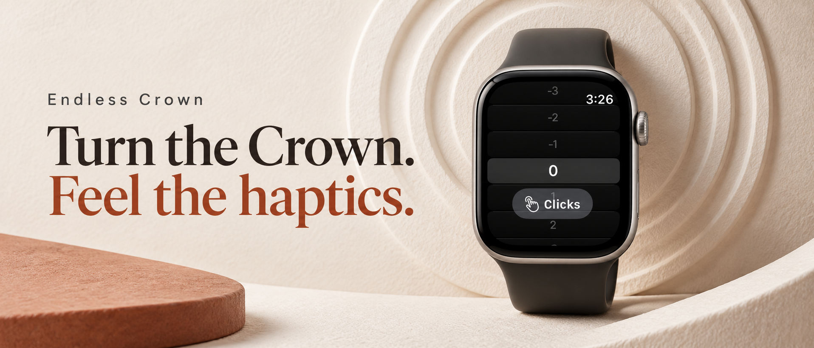
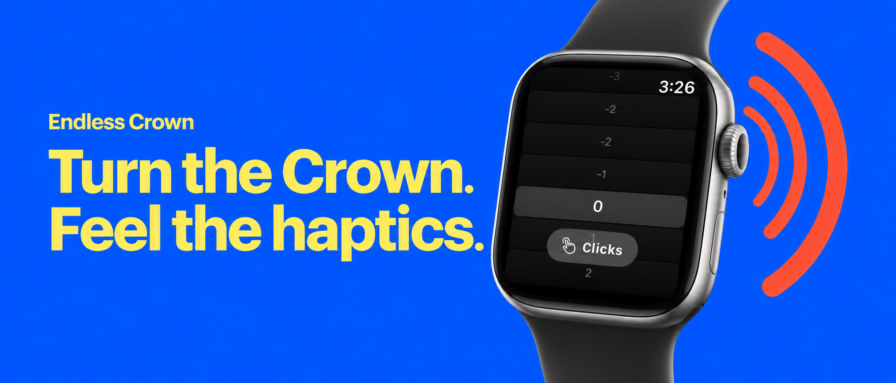
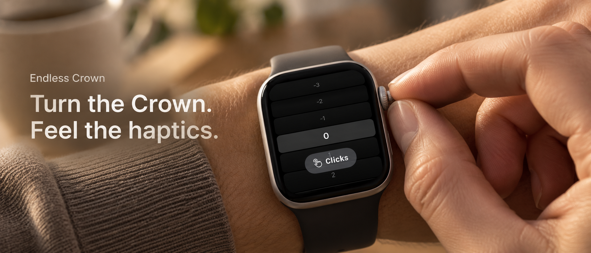
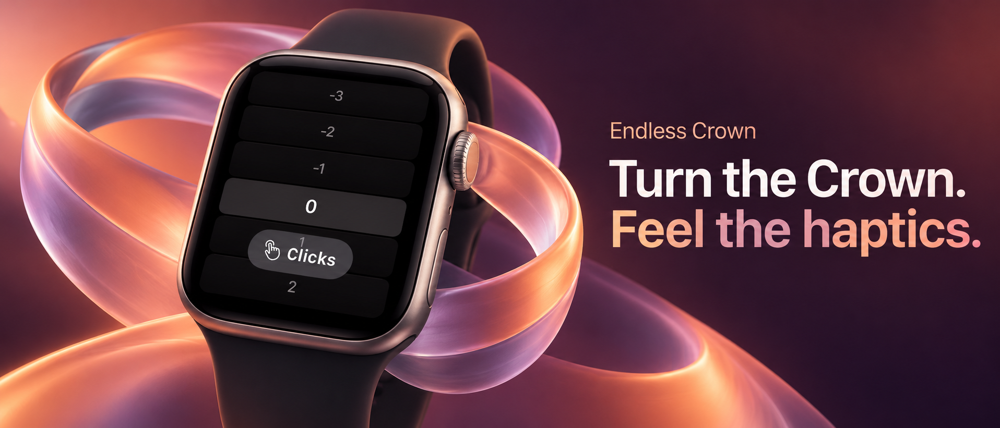

Endless Crown: four new directions
Generated with the built-in imagegen tool. These are art-direction concepts; final artwork will use verified app UI and Apple's required sizes and safe areas.

Selected direction: editorial wrist, v3
Natural lighting and texture. Counter 4698 with consecutive neighbors and the system clock. Previous counter · Original direction.



1. Tactile minimalism
Warm ivory, paper relief, terracotta and editorial type.


2. Playful color
Bold cobalt, butter yellow and graphic motion.

3. Editorial wrist shot
Natural light and a close view of the actual Crown gesture.


4. Abstract haptic motion
Coral and lavender ribbons expressing touch and movement.